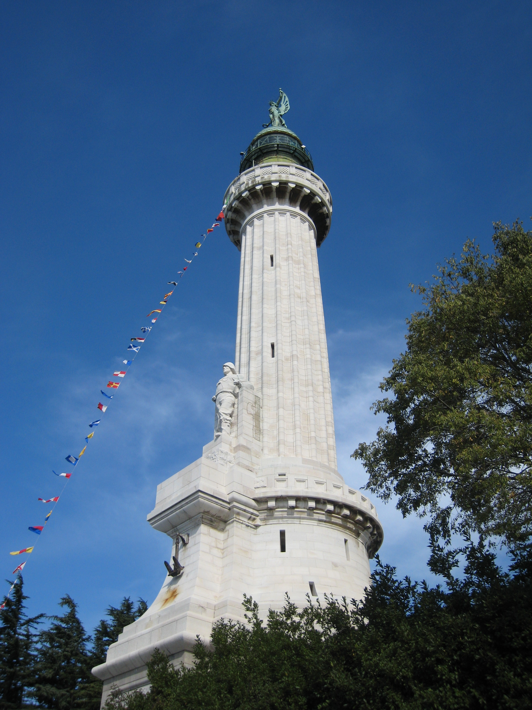

Luoghi da vedere
Clicca il pulsante per leggere una curiosità!
Il castello di Miramare si trova su un piccolo promontorio sul mare. Fu voluto da Massimiliano d'Asburgo e costruito a metà Ottocento, ed è circondato da un grande parco.
Il faro della Vittoria è stato inaugurato nel 1927 ed è dedicato ai caduti in mare della Prima guerra mondiale. Si vede da gran parte del golfo.


Sito web sviluppato da Omar Vidonis, studente dell'università degli studi di Trieste matricola: IN0501505